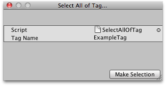

Selection.objects
public static Object[] objects;
Description 描述
The actual unfiltered selection from the Scene.
All objects will be returned, including assets in projects. You can also assign objects to the selection.
See Also: Selection.instanceIDs.

Scriptable Wizard that lets you select GameObjects by their tag.
using UnityEngine; using UnityEditor;
class SelectAllOfTag : ScriptableWizard { string tagName = "ExampleTag";
[MenuItem("Example/Select All of Tag...")] static void SelectAllOfTagWizard() { ScriptableWizard.DisplayWizard( "Select All of Tag...", typeof(SelectAllOfTag), "Make Selection"); }
void OnWizardCreate() { GameObject[] gos = GameObject.FindGameObjectsWithTag(tagName); Selection.objects = gos; } }